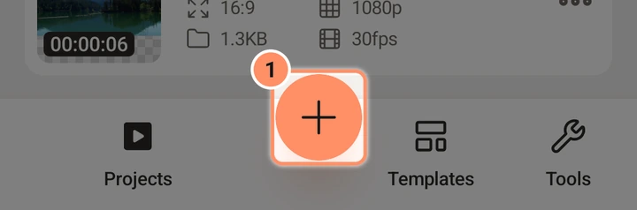
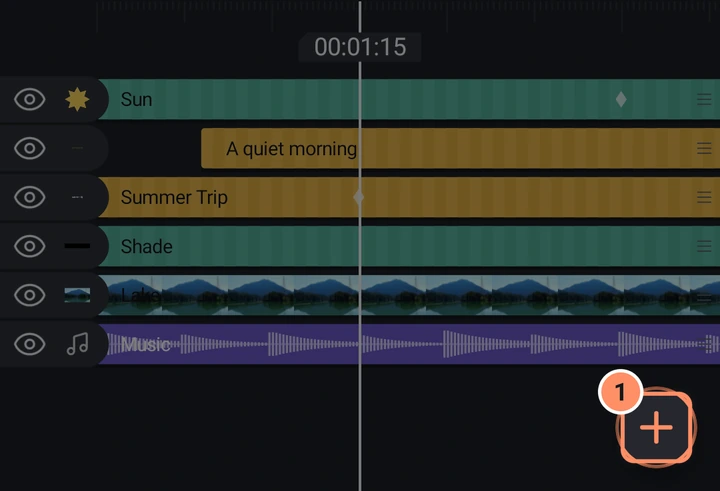
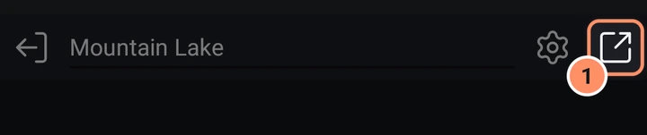

Erste Schritte
Installiere AbsentMotion, erstelle dein erstes Projekt, animiere etwas und exportiere es.
Auf dieser Seite
Installieren
AbsentMotion ist auf diesem Telefon bereits installiert. Diese Seite führt durch ein erstes Projekt. Die anderen Seiten beschreiben jeden Bildschirm.
Der erste Start
Beim ersten Öffnen der App werden vor dem Startbildschirm zwei Bildschirme angezeigt.
- Wähle deine Sprache. Die App hat 25 Sprachen: Englisch, Indonesisch, Hindi, Portugiesisch (Brasilien), Spanisch (Lateinamerika), Spanisch (Spanien), Filipino, Vietnamesisch, Thai, Malaiisch, Arabisch, Persisch, Urdu, Türkisch, Russisch, Bengalisch, Japanisch, Koreanisch, Chinesisch (traditionell), Chinesisch (vereinfacht), Französisch, Deutsch, Italienisch, Polnisch und Ukrainisch. Die Sprache deines Telefons steht zuerst, wenn die App sie hat. Du kannst sie später in den Einstellungen ändern.
- Prüfe, was dieses Gerät kann. Ein kurzer Test zeigt, welche Videoformate und Größen dein Telefon exportieren kann und wie schnell es ist (Schnell, Gut oder Einfach). Er läuft einmal, dauert ein paar Sekunden, und alles bleibt auf dem Telefon. Du kannst auf Überspringen tippen. Derselbe Bildschirm hat einen Schalter, mit dem die App bei jedem Öffnen einmal bei GitHub nach der neuesten Versionsnummer fragen darf. Er ist beim Start eingeschaltet und sendet sonst nichts.
Die App fragt beim Start nach keiner Berechtigung. Zugriff auf Fotos, Video, Audio, Kamera und Mikrofon wird beim ersten Mal erfragt, wenn du eine Funktion verwendest, die ihn braucht.
Dein erstes Projekt erstellen
- Tippe auf dem Startbildschirm unten auf den runden +-Button. Das ist Neues Projekt.
- Wähle eine Form (16:9, 9:16, 4:5, 1:1 oder 4:3), eine Auflösung (1080p ist ein guter Anfang) und einen Hintergrund. Lass die Bildrate unverändert, wenn du dir nicht sicher bist. Tippe auf Projekt erstellen. Der Editor öffnet ein leeres Projekt. Details: Ein Projekt erstellen.
- Tippe unten rechts im Zeitleistenbereich auf den runden +-Button und wähle etwas zum Hinzufügen: eine Form, ein Foto oder Video aus dem Tab Medien oder Text.
- Ziehe auf der Vorschau, um die Ebene zu verschieben. Kneife, um sie größer oder kleiner zu machen.
- Ziehe auf der Zeitleiste nach links oder rechts, um dich durch die Zeit zu bewegen. Um eine Ebene zeitlich zu verschieben, halte ihren Balken gedrückt und ziehe ihn. Zum Trimmen wähle sie aus und ziehe die runden Griffe an ihren Enden.
- Tippe auf den Wiedergabe-Button, um dir das Ergebnis anzusehen.


Es gibt keinen Speichern-Button. Das Projekt wird kurz nach jeder Änderung gespeichert.
Etwas animieren
Animation in AbsentMotion besteht aus Keyframes: Ein Keyframe speichert einen Wert (eine Position, eine Größe, eine Deckkraft) zu einem bestimmten Zeitpunkt, und die App füllt die Bewegung zwischen den Keyframes aus.
- Tippe auf eine Ebene in der Vorschau oder der Zeitleiste. Unten erscheint ein Raster mit Werkzeugen.
- Tippe auf Transformieren. Der Tab Verschieben ist geöffnet.
- Stelle den Abspielkopf dorthin, wo die Bewegung beginnen soll, und tippe auf den Keyframe-Button (die Raute) in der linken Spalte.
- Verschiebe den Abspielkopf zu einem späteren Zeitpunkt und ziehe die Ebene an einen neuen Ort. Weil die Eigenschaft schon einen Keyframe hat, wird automatisch ein zweiter angelegt.
- Spiele ab. Tippe auf den Easing-Button (die Kurve), damit die Bewegung schneller oder langsamer wird oder federt. Siehe Keyframes und Easing.

Für schnelle Ergebnisse wählst du eine Ebene aus und tippst unten rechts in der Vorschau auf den runden Button Animieren. Dort wählst du eine Einblend-, Ausblend- oder Schleifenanimation. Alternativ öffnest du Effekte und probierst einen der Bewegungseffekte aus.
Exportieren
- Tippe in der oberen Leiste auf das Teilen-Symbol (mit dem Namen Exportieren & teilen).
- Die Karte Video ist ausgewählt. Tippe auf Exportieren.
- Warte, bis der Fortschrittsbalken fertig ist. Inzwischen kannst du zu einer anderen App wechseln: Eine Benachrichtigung zeigt den Fortschritt.
- Tippe auf Video teilen oder suche die Datei in Movies/AbsentMotion.

Alle Optionen (Formate, Auflösung, Bildrate, GIF, nur Audio) findest du auf der Seite Export.
Wo was ist
| Ich möchte | Gehe zu |
|---|---|
| Ein Projekt starten | + auf dem Startbildschirm |
| Eine Ebene hinzufügen | + im Editor (wird angezeigt, wenn nichts ausgewählt ist) |
| Eine Ebene ändern | Tippe darauf und nutze dann das Werkzeugraster |
| Animieren | Der Keyframe-Button in einem Feld oder der Button Animieren |
| Einen Effekt hinzufügen | Ebene auswählen, Effekte, Effekt hinzufügen |
| Rückgängig machen | Der erste Button der Abspielleiste |
| Exportieren | Das Teilen-Symbol in der oberen Leiste |
| Eine Einstellung ändern | Der Menübutton oben links auf dem Startbildschirm |
Weiter
- Der Startbildschirm und der Editor-Bildschirm zeigen jeden Button.
- Effekte verwenden erklärt die Effektbibliothek.
- Fehlerbehebung und Fragen beantwortet häufige Probleme.